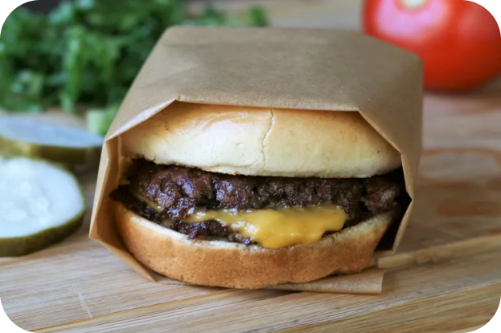

This smash burger recipe makes super juicy burgers with crispy edges.Don't use meat that is leaner than 80/20 for best results, and make sure the meat is very cold.I prefer to cook these outdoors to avoid smoking up the kitchen.grill up very fast because of the high heat, so make sure you have everything ready to go!

4 hamburger buns
2 tablespoons butter, softened, or as needed
1 pound ground chuck beef (80% lean)
4 6-inch squares parchment paper
salt to taste
4 slices American cheese
burger toppings of choice
Preheat an outdoor grill for high heat and lightly oil the grate.
Set a cast iron flat-top griddle or large cast iron skillet onto the grill and preheat until smoking.
Spread butter on the inside of the buns and toast on the flat-top until lightly browned. Set aside.
Form meat into 8 loosely-packed balls, 2 ounces each.
Do not pack the meat tightly, as this will prevent it from smashing properly.
Place each ball on the hot flat-top, cover with a piece of parchment (to prevent sticking to the spatula;
re-use each parchment square on a second patty) and immediately smash down to a 1/4
inch thickness using 2 stiff,
sturdy spatulas that are criss-crossed to get proper leverage as you press down.
You may also use the bottom of small skillet.
Sprinkle the meat with salt.
Grill for about 45 seconds,
until the edges are dark brown and the centers are a light pink color.
Using a bench scraper or firm spatula,
gently scrape up the patties, flip over and immediately cover 4 of them with cheese.
Grill an additional 15 to 20 seconds;
stack the plain patties over the cheese-covered patties so you have 4 stacks.
Move each stack to a bun and serve with your favorite toppings.